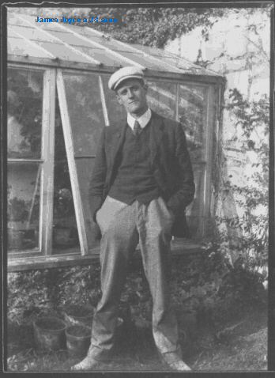
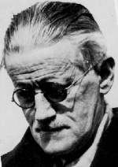
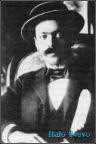
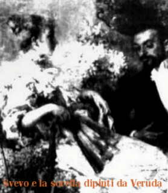

Quando, nel 1905, al quarantenne commerciante Ettore Schmitz fu consigliato il giovane insegnante di inglese James Joyce della Berlitz School di Trieste, lo scrittore Italo Svevo sembrava morto e sepolto sotto l'indifferenza che aveva accolto i suoi primi due romanzi. Fra i due letterati nacque però ben presto un rapporto di intensa amicizia e di stima reciproca che sarebbe sfociato in una collaborazione alquanto fruttuosa per entrambi.
Essendo infatti venuto a sapere che fra i suoi allievi vi era uno scrittore, il ventenne ma già affermato Joyce chiese a Svevo di poter leggere i suoi manoscritti. Lo scrittore triestino acconsentì e la reazione dell'irlandese fu di assoluto entusiasmo: incoraggiò l'amico a non abbandonare la scrittura e gli sottopose le sue poesie ed i racconti di Dubliners. Racconta Livia Veneziani Svevo, in Vita di mio marito: "Fra il maestro, oltremodo irregolare, ma d'altissimo ingegno (conosceva diciotto lingue tra antiche e moderne), e lo scolaro d'eccezione, le lezioni si svolgevano con un andamento fuori dal comune...Si parlava di letteratura e si sfioravano mille argomenti".
Fu probabilmente grazie agli incoraggiamenti di Joyce che Svevo portò a termine La coscienza di Zeno e che reagì all'indifferenza con cui l'universo letterario italiano accolse anche il suo terzo romanzo. Convinto della bontà della sua opera, spedì una copia all'amico che la guerra aveva costretto al soggiorno in Francia. Questi fece conoscere l'opera ai suoi amici critici letterari francesi Valery Larbaud e Benjamin Cremieux i quali, anche sulla base dell'operazione pubblicitaria dell'irlandese, rimasero affascinati da quest'ultima opera e ne proposero a Svevo un'edizione in francese.
Nel giro di pochi mesi il nome di Svevo cominciò a circolare sempre più frequentemente nei circoli culturali francesi e, di conseguenza, europei; solo in Italia, dove solo il giovane Montale sembrò accorgersi di lui, non gli venne tributata la giusta fama.
Il fatto che Svevo e Joyce si conoscessero e confrontassero le loro idee non deve far pensare che Svevo fosse il Joyce italiano, ovvero che la Coscienza di Zeno e l'Ulysse non siano altro che due realizzazioni della stessa tecnica letteraria. Il capolavoro di Joyce propone una tecnica narrativa rivoluzionaria, quella del monologo interiore, e pure nella Coscienza v'è un personaggio che monologa. Le somiglianze si limitano però quasi solo a questo: i due romanzi sono profondamente diversi perché diverse sono le tecniche con cui vengono tratteggiate le coscienze di Leopold Bloom e Zeno Cosini.
Leggendo una pagina dell'Ulysse possiamo notare come lo "Stream of Consciuossness" joyciano consista in una descrizione in terza persona delle azioni del protagonista nella quale si inseriscono senza connessione sintattica i suoi pensieri che, privi di ogni ordinamento logico, si limitano a riflettere le sue associazioni mentali. I pensieri sono pertanto colti nel loro nascere e sono riportati senza alcun controllo da parte della ragione.
E' proprio qui che sta la grande differenza tra l'Ulysse e La Coscienza: Zeno scrive un'autobiografia. Le sue parole nascono quindi sotto il rigido controllo della coscienza che censura, cambia e riordina gli avvenimenti in modo che possano risultare il più possibile favorevoli al protagonista. Come se ciò non bastasse, Zeno non scrive per se stesso ma per il dottor S.: anche questo lo obbliga a filtrare il suo racconto e ad erigere barriere che impediscano il libero fluire dei pensieri.
Queste differenze si riflettono anche sulla sintassi delle opere. Se Joyce arriva a far esplodere la sintassi e ad abolire per lunghi tratti la punteggiatura, nel racconto di Zeno tutti i nessi logici rimangono. Lo scrittore irlandese inoltre si diverte a sperimentare: combina i registri più lontani tra loro e gioca con suoni e parole, mentre l'eloquio di Zeno è la lingua colloquiale della borghesia triestina.
Concludendo, i collegamenti tra le due opere sono generici e limitati all'interpretazione di uno stesso clima culturale di inizio Novecento che, abbandonata la visione del mondo positivista, ama esplorare le profondità della psiche umana rivoluzionando le tecniche di scrittura alla luce di questa ricerca. Ciascuno dei due scrittori ha però saputo interpretare peculiarmente e sapientemente questo comune clima generale.